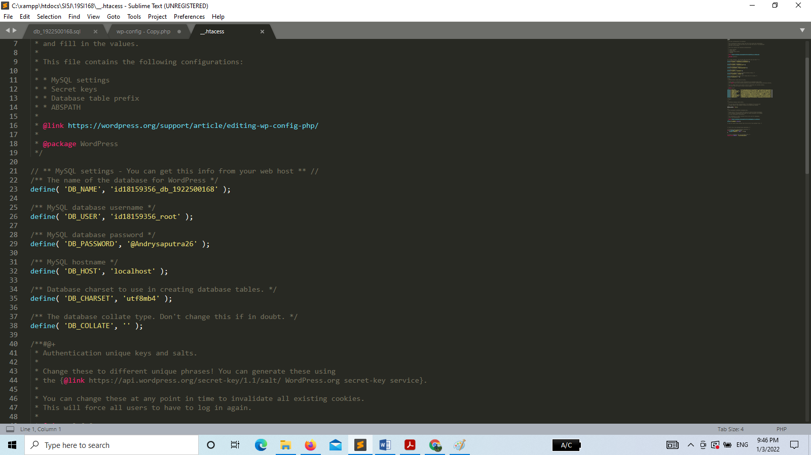
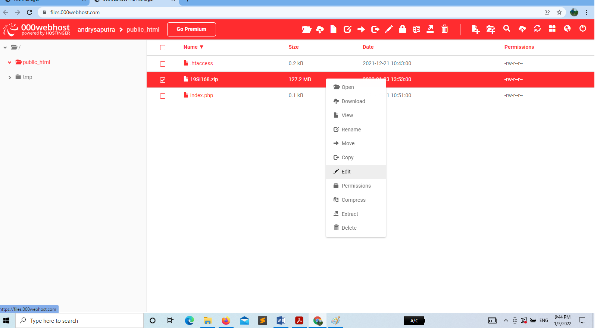

NIM : 1922500168
Nama : Andry Saputra
Kelompok : SI5J
Kesimpulan dan hasil pertemuan ke 9 yang saya ambil adalah :
- Pertemuan 9
- Dipertemuan kali ini kita mencoba membuat hosting
- setelah itu tentukan nama hosting dan pasword nya sesuai yang kita mau
- setelah itu kita klik copy link hosting yang kita buat
- sesudah itu kita akan menuju link web kita klik tool/file manager setelah itu akan muncul upload file
- lalu kita buat index.php lalu kita edit dicodingan tersebut dengan tulisan hello dunia
- kemudian kita bisa memidahkan file woodpress kita tersebut ke hosting yang kita buat dengan mengubah di sql nya dll
- setelah itu kita zip file woodpress yang sudah kita ubah lalu klik upluad file kita ke hosting yang kita buat
Berikut halaman Tampilan web setelah di restore :

Berikut halaman Tampilan front end :

Berikut halaman Tampilan back end:
